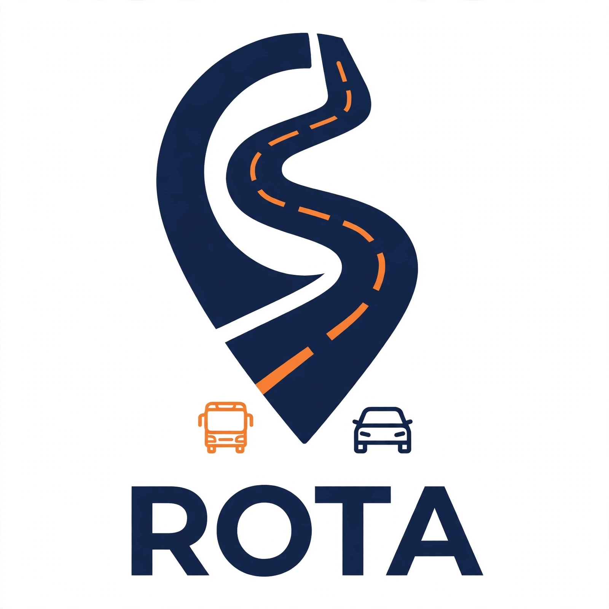
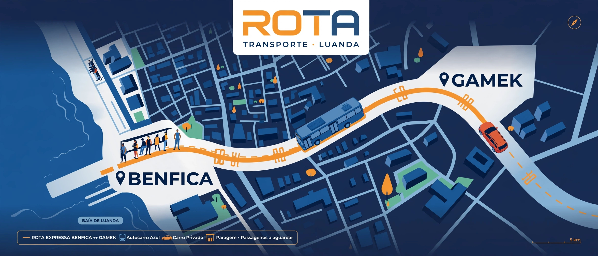
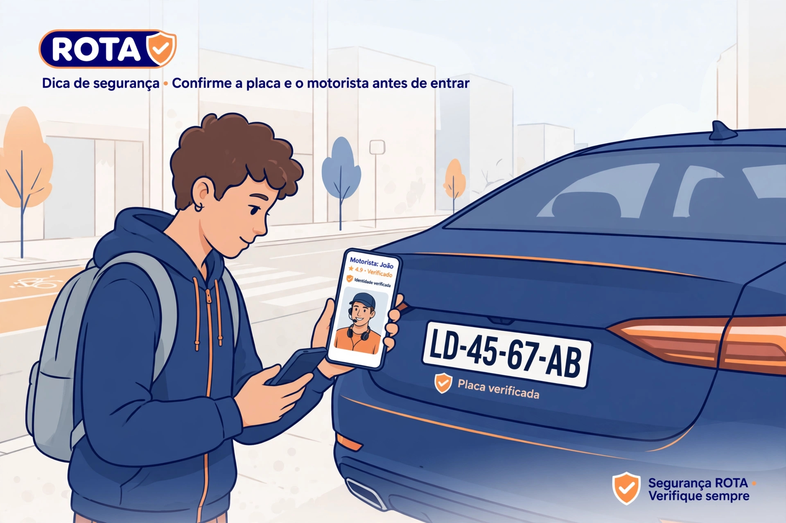

Angola em movimento
Chegue com mais segurança.
Veja onde está o transporte, quem conduz e partilhe a viagem com a sua família em qualquer província de Angola — sem perder o controlo.
Sessão activa
Está dentro da ROTA, utilizador.
A sua sessão permanece activa até escolher Terminar sessão.
Encontrar viagem
Antes de entrar, confirme a placa.A matrícula no aplicativo tem de ser igual à do veículo.
Mapa em direto
Transportes perto de si
Autocarro Transporte PrivadoA localizar Angola
Identidade ROTA
Rotas claras. Segurança visível.
O ROTA combina informação de percurso com verificação do condutor, da viatura e da matrícula antes da viagem.
21 provínciasGPS em directoPartilha familiar



Dica de segurança
Confirme a placa e o motorista antes de entrar.
Use sempre a fotografia, o nome e a matrícula mostrados no aplicativo como referência.
Começar agora
Crie a sua conta ROTA
Escolha o seu perfil. Se já se registou, use o botão Entrar no topo ou nesta página.